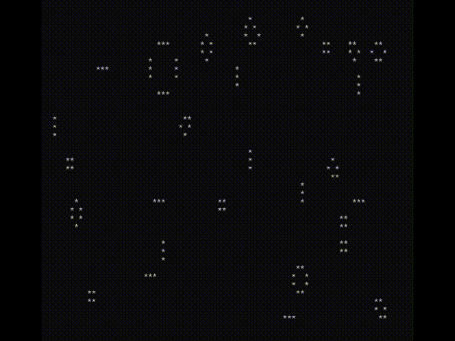

Welcome to the CJIT Manual
CJIT is a versatile C interpreter based on TinyCC, designed to compile C code in-memory and execute it live. This manual serves as a guide to the full potential of CJIT, empowering you to efficiently develop and test C programs in real-time.
CJIT is distributed as a small, all-in-one executable, ensuring a lightweight and portable solution for your coding needs. One of its standout features is the ability to call functions from any installed library, making it a robust tool for rapid prototyping and dynamic code execution on Linux, Windows, and macOS. üñ•Ô∏è
The following sections will guide you through practical usage examples, helping you to swiftly integrate CJIT into your workflow. üìöüîß
Hello World!
This classic example will make you create a hello.c file and execute it with CJIT to print the string "Hello World!" in the terminal.
Please chose the right example code using tabs: MS/Windows, Apple/OSX or GNU/Linux
Info
All Windows based examples are made for the PowerShell terminal, if you are on WSL then chose GNU/Linux
Download CJIT pasting a command in the terminal
Invoke-WebRequest -Uri "https://github.com/dyne/cjit/releases/latest/download/cjit.exe" -OutFile "cjit.exe"
curl -sLo cjit https://github.com/dyne/cjit/releases/latest/download/cjit-$(uname)-$(uname -m)
curl -sLo cjit https://github.com/dyne/cjit/releases/latest/download/cjit-$(uname)-$(uname -m)
Then create hello.c by pasting these lines in the terminal:
@"
#include <stdio.h>
#include <stdlib.h>
int main(int argc, char **argv) {
fprintf(stderr,"Hello, World!\n");
exit(0);
}
"@| Out-File -FilePath "hello.c"
cat << EOF > hello.c
#!/usr/bin/env cjit
#include <stdio.h>
#include <stdlib.h>
int main(int argc, char **argv) {
fprintf(stderr,"Hello, World!\n");
exit(0);
}
EOF
cat << EOF > hello.c
#!/usr/bin/env cjit
#include <stdio.h>
#include <stdlib.h>
int main(int argc, char **argv) {
fprintf(stderr,"Hello, World!\n");
exit(0);
}
EOF
Finally execute hello.c using CJIT with:
.\cjit.exe .\hello.c
./cjit hello.c
./cjit hello.c
As a result you will see CJIT starting and printing "Hello World!"
CJIT v0.8.7 by Dyne.org
inc: C:\Users\utente\AppData\Local\Temp\CJIT-v0.8.7
lib paths: C:\Users\utente\AppData\Local\Temp\CJIT-v0.8.7
Source code:
+ .\hello.c
Execution start
---
Hello, World!
You can now play with hello.c, change what you want and run it again!
Flying Donuts
This example will print an animated donut on the terminal!
Create the donut.c file using the artful code below:
@"
i,j,k,x,y,o,N;
main(){float z[1760],a
#define R(t,x,y) f=x;x-=t*y\
;y+=t*f;f=(3-x*x-y*y)/2;x*=f;y*=f;
=0,e=1,c=1,d=0,f,g,h,G,H,A,t,D;char
b[1760];for(;;){memset(b,32,1760);g=0,
h=1;memset(z,0,7040);for(j=0;j<90;j++){
G=0,H=1;for(i=0;i<314;i++){A=h+2,D=1/(G*
A*a+g*e+5);t=G*A *e-g*a;x=40+30*D
*(H*A*d-t*c);y= 12+15*D*(H*A*c+
t*d);o=x+80*y;N =8*((g*a-G*h*e)
*d-G*h*a-g*e-H*h *c);if(22>y&&y>
0&&x>0&&80>x&&D>z[o]){z[o]=D;b[o]=(N>0
?N:0)[".,-~:;=!*#$@"];}R(.02,H,G);}R(
.07,h,g);}for(k=0;1761>k;k++)putchar
(k%80?b[k]:10);R(.04,e,a);R(.02,d,
c);usleep(15000);printf('\n'+(
" donut.c! \x1b[23A"));}}
/*no math lib needed
.@a1k0n 2021.*/
"@| Out-File -FilePath "donut.c"
cat << EOF > donut.c
i,j,k,x,y,o,N;
main(){float z[1760],a
#define R(t,x,y) f=x;x-=t*y\
;y+=t*f;f=(3-x*x-y*y)/2;x*=f;y*=f;
=0,e=1,c=1,d=0,f,g,h,G,H,A,t,D;char
b[1760];for(;;){memset(b,32,1760);g=0,
h=1;memset(z,0,7040);for(j=0;j<90;j++){
G=0,H=1;for(i=0;i<314;i++){A=h+2,D=1/(G*
A*a+g*e+5);t=G*A *e-g*a;x=40+30*D
*(H*A*d-t*c);y= 12+15*D*(H*A*c+
t*d);o=x+80*y;N =8*((g*a-G*h*e)
*d-G*h*a-g*e-H*h *c);if(22>y&&y>
0&&x>0&&80>x&&D>z[o]){z[o]=D;b[o]=(N>0
?N:0)[".,-~:;=!*#$@"];}R(.02,H,G);}R(
.07,h,g);}for(k=0;1761>k;k++)putchar
(k%80?b[k]:10);R(.04,e,a);R(.02,d,
c);usleep(15000);printf('\n'+(
" donut.c! \x1b[23A"));}}
/*no math lib needed
.@a1k0n 2021.*/
EOF
cat << EOF > donut.c
i,j,k,x,y,o,N;
main(){float z[1760],a
#define R(t,x,y) f=x;x-=t*y\
;y+=t*f;f=(3-x*x-y*y)/2;x*=f;y*=f;
=0,e=1,c=1,d=0,f,g,h,G,H,A,t,D;char
b[1760];for(;;){memset(b,32,1760);g=0,
h=1;memset(z,0,7040);for(j=0;j<90;j++){
G=0,H=1;for(i=0;i<314;i++){A=h+2,D=1/(G*
A*a+g*e+5);t=G*A *e-g*a;x=40+30*D
*(H*A*d-t*c);y= 12+15*D*(H*A*c+
t*d);o=x+80*y;N =8*((g*a-G*h*e)
*d-G*h*a-g*e-H*h *c);if(22>y&&y>
0&&x>0&&80>x&&D>z[o]){z[o]=D;b[o]=(N>0
?N:0)[".,-~:;=!*#$@"];}R(.02,H,G);}R(
.07,h,g);}for(k=0;1761>k;k++)putchar
(k%80?b[k]:10);R(.04,e,a);R(.02,d,
c);usleep(15000);printf('\n'+(
" donut.c! \x1b[23A"));}}
/*no math lib needed
.@a1k0n 2021.*/
EOF
Then make the donut fly with CJIT!
.\cjit.exe .\donut.c
./cjit donut.c
./cjit donut.c
Warning
With this example and other programs, just hit CTRL+C to quit.
The state of affairs in CJIT is well demonstrated by this example: right now the terminal is much slower on windows (rightmost donut).

Game of Life
Anothre fascinating example is the "Game of Life," a cellular automaton devised by the British mathematician John Horton Conway in 1970. This zero-player game simulates the evolution of a grid of cells, showcasing complex behaviors emerging from simple rules.
Download the life.c example pasting a command in the terminal
Invoke-WebRequest -Uri "https://raw.githubusercontent.com/dyne/cjit/refs/heads/main/examples/life.c" -OutFile "life.c"
curl -sLo life.c https://raw.githubusercontent.com/dyne/cjit/refs/heads/main/examples/life.c
curl -sLo life.c https://raw.githubusercontent.com/dyne/cjit/refs/heads/main/examples/life.c
Then execute the life.c source file passing it as argument to cjit, the same way it was done for the flying donut.

Pretty cool stuff for some "boring" terminal session eh? Have a look
around the life.c file with your favorite text editor and feel free
to change things and see what happens.
⏩ Next chapter: graphics with CJIT
Now you are familiar with the way to execute CJIT! If you think that C is fun (and fast!) you are welcome to read the next chapter of this manual and discover one of many ways to run graphical applications.